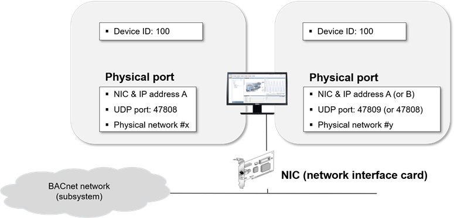
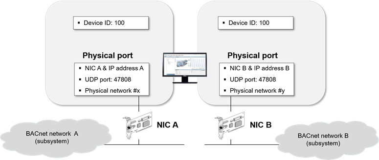

BACnet Driver
By default, a Desigo CC project has no BACnet driver added. For procedures about BACnet drivers, including how to add one, see BACnet Driver.
Sharing a Network Interface Card

If you create more than one BACnet driver, the drivers can be assigned to the same Network Interface Card (NIC). To avoid configuration conflicts, apply the following guidelines to the physical port configuration in the BT BACnet Stack Config expander:
- The Network Number of each Physical Port must be unique.
- The IP Address and UDP Port (default is 47808) of each Physical Port must be unique. This means that the Physical Ports must have a different IP address or a different UDP port. For instance, if two drivers are assigned to the same NIC, you can use the value 47809 for the UDP port of the Physical Port of the second driver.
Using Separate Network Interface Cards for Each Driver

If you create more than one BACnet driver, the drivers can also be assigned to separate NICs. To avoid configuration conflicts, apply the following guidelines to the Physical Port configuration in the BT BACnet Stack Config expander:
- The Network Number of each physical port must be unique.
- The IP Address of each physical port must be unique. This means that the physical ports must have a different IP address.
System Limitations
The following limitations apply to the Management System Server:
- Maximum number of FEPs: 5
- Maximum number of drivers per FEP: 40
- Maximum number of drivers per Server:
Local = 20 (in a Server)
Total = 80 (split between the local Server and a minimum of 2 FEPs)
NOTE: The default for the maximum number of BACnet drivers is 10. If required, you can increase the number to 40 in the BACnet Driver Object Model. In all cases, the system limits for the maximum number of drivers apply. See System Limits and Hardware Requirements, A6V12072883_en_a_(current revision).
Considerations
- When you select the driver object in the System Browser tree, the Extended Operation tab of the Contextual pane shows its Manager Status:
- Stopped: The driver (or the simulator) is not running. You can start the driver (or simulator).
- Configuration Mode: The simulator started and is running properly. You can stop it.
- Started: The driver started is running properly. You can stop it.
- Failed: The driver (or the simulator) started but there is no connection to the Server or FEP station (for example, a station cannot be reached or is disconnected). You can stop the driver (or simulator) and then try to start it again.
- After starting the simulator, you can continue configuring the network (for example, importing devices, and so on). To start the driver, you must first stop the simulator.
- When the Manager Status is
Failed, you cannot make changes to the configuration (for example, import operations are not allowed). - It is not possible to stop the driver (or the simulator) during import operations.
- If the driver is not properly configured and you try to start it (or the simulator), the Manager Status becomes
Failedand an alarm is generated for each network using this driver. The network status becomesNot Reachable.
- If the device hosting the driver is disconnected, the Manager Status becomes
Failed, and an alarm is generated. The device state becomesNot Reachable.
- If the PMON user account is set to an account without administrative privileges, you will not be able to configure or add a BACnet driver during a new installation. In SMC, you need to change the original account to a PMON user account with administrative rights, and then configure the BACnet driver. After configuring the driver, you can change the PMON user account back to the original account.
For more information, see Engineering Reference > Project Setup > SMC Troubleshooting > Troubleshooting Projects.